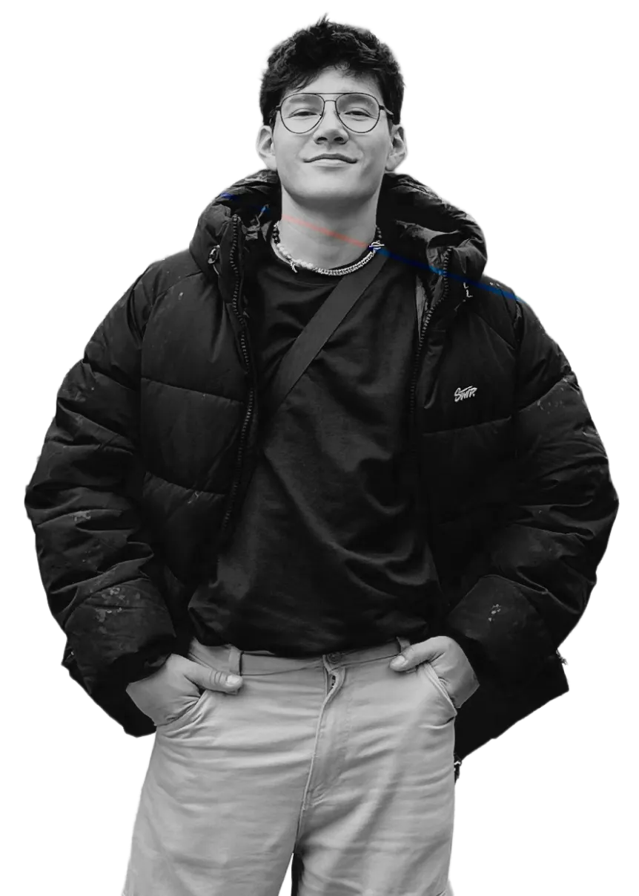
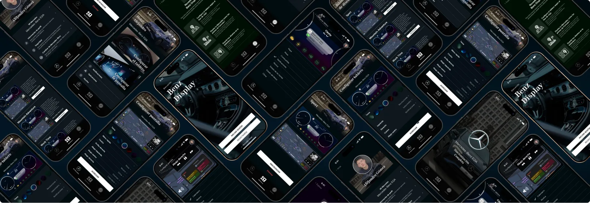
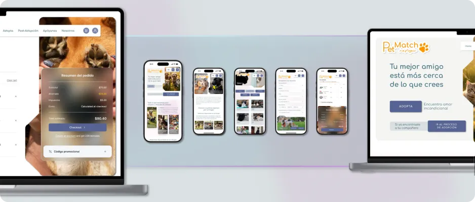
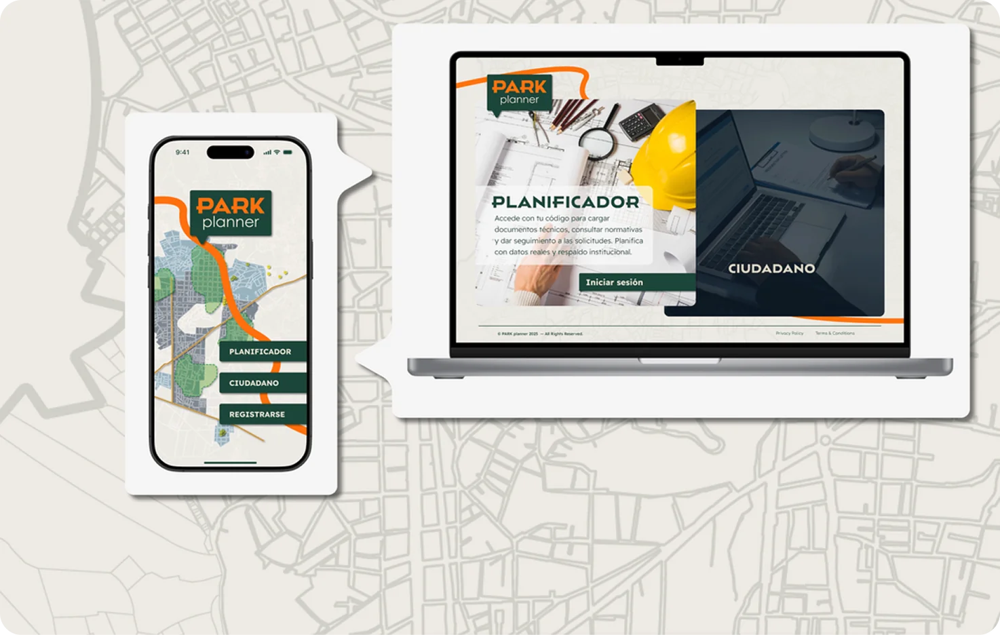
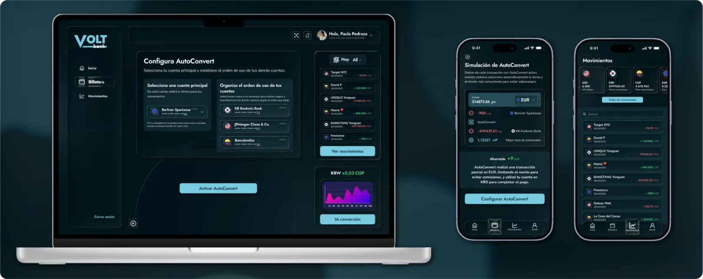
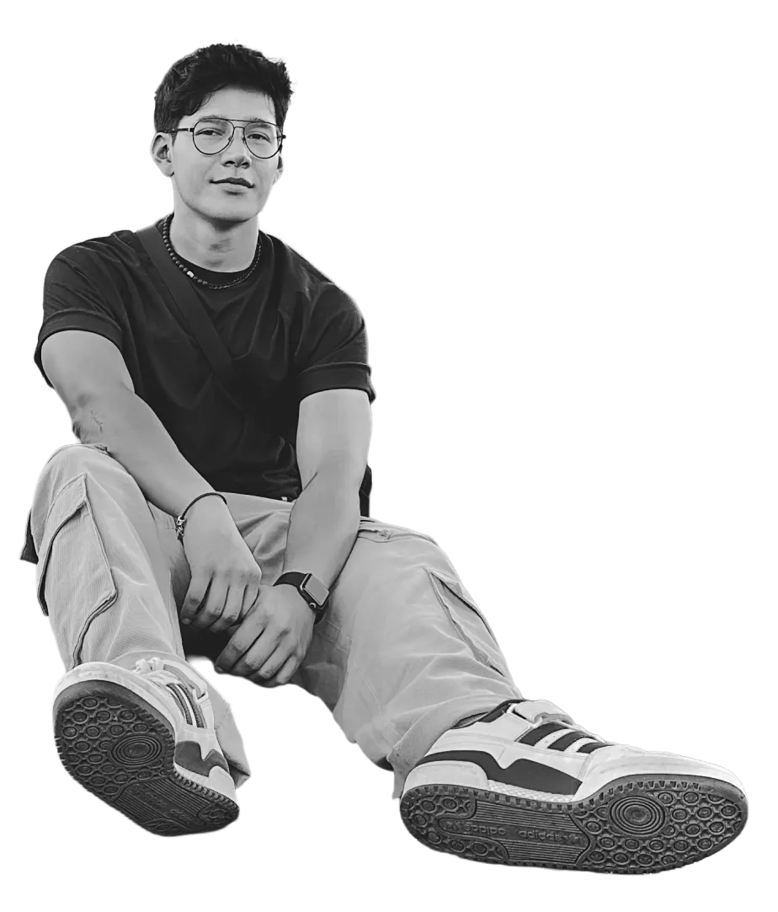

Diseñador UX/UI · Bogotá, Colombia
ALEJANDRO GÓMEZ
Diseño productos digitales claros para contextos complejos.
Diseñador Industrial y Magíster en Diseño Urbano. Desde 2018 diseño sitios y productos digitales; hoy, en LinkTIC, investigo con usuarios, prototipo y construyo el design system de plataformas web y móviles.

proyectos destacados
Ver todosCaso 01 · App móvil · Concepto
benz display
Una app para que cada conductor configure su tablero según el viaje. En las pruebas, 5 de 5 conductores lo lograron sin dificultad.

Investigado con personas. Diseñado para usarse.
Casos de estudio UX
04

Caso 02 · Web app · Concepto
petmatch
Adopción de mascotas por compatibilidad, con acompañamiento después de adoptar. 18 de 20 tareas completadas sin dificultad en la prueba.

Caso 03 · App + web · Concepto
park planner
Ciudadanos y planificadores deciden qué parque se necesita. 10 de 10 tareas fáciles en la prueba.

Caso 04 · Fintech · Prueba de ascenso
voltbank
autoconvert
Rediseñé el flujo de activación de AutoConvert, donde el 62% de los usuarios abandonaba.
lo que aporto
01
UX Research
Entrevistas, auditorías competitivas, mapas de afinidad y pruebas de usabilidad para decidir con evidencia, no con opiniones.
02
Arquitectura y flujos
Sitemaps, flujos por rol y jerarquías claras para productos con varios tipos de usuario.
03
UI y design systems
Construyo y mantengo sistemas de diseño: componentes y lineamientos que mantienen la coherencia entre equipos.
04
Marca y dirección creativa
Cinco años dirigiendo marca y equipos creativos: llevo una visión desde la estrategia hasta la pieza final.
05
IA y conocimiento
Uso IA para sintetizar investigación, automatizar el design system y prototipar en código. Documento cada proyecto en bóvedas de conocimiento.
principios
01
Evidencia antes que opinión
Si no lo probé con usuarios, es una hipótesis.
02
Menos carga, más claridad
Simplifico antes de agregar funciones.
03
Diseñar con desarrollo
Comparto flujos y componentes temprano para que lo que diseño se pueda construir.
04
Sistemas, no pantallas
Cada componente nuevo entra al design system.
05
Accesible por defecto
Contraste, jerarquía y estados claros desde el primer wireframe.

Sobre mí
Diseño para que lo complejo se vuelva simple.
Vengo del diseño industrial, el diseño urbano y la dirección de marca: lideré la marca y los equipos creativos de Confía SDC, MSEG y VR Ingeniería. Hoy, en LinkTIC, diseño interfaces web y móviles, investigo con usuarios y construyo el design system junto a desarrollo y producto.
Conóceme